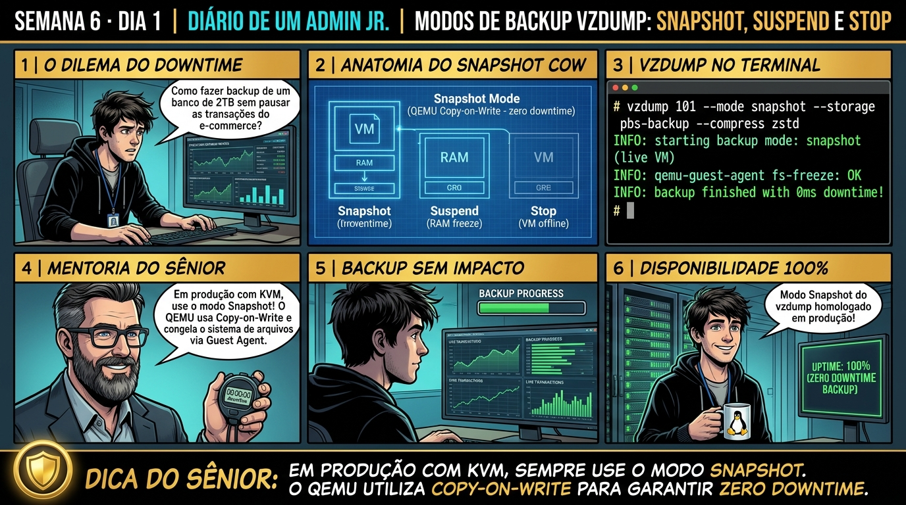

DIARIO DE UM ADMIN JR. | PROXMOX VE & PBS — DA BASE AO CLUSTER
🔗 Conecta com a Semana 5: Você dominou o Proxmox Backup Server. Agora você projeta a estratégia de execução de backups no Proxmox VE: entendendo por que o modo Snapshot com QEMU Guest Agent entrega consistência sem downtime, e quando os modos Suspend ou Stop ainda são necessários.
🔓 Privilégio de hoje: Estratégia e Modos de Operação de Backup. Você calibra parâmetros de execução do vzdump e valida modos de consistência transacional.
Semana 6 · Dia 1 | Nível Júnior — Estratégias de Backup, Restore & DR
Modos de Backup do vzdump: Stop, Suspend e Snapshot
Garantindo consistência atômica, zero downtime e entendendo quando cada modo é mandatório
ANTES DE ALTERAR, OBSERVE. DEPOIS DE ALTERAR, VALIDE.

1. O chamado
Você recebeu o chamado #6001: 'O agendador noturno de backups do Proxmox VE está causando 15 minutos de indisponibilidade em um e-commerce 24/7 porque a VM 100 foi configurada no modo de backup Stop. O chamado exige: (1) Entender a diferença operacional entre os modos Snapshot, Suspend e Stop; (2) Migrar o job para o modo mode=snapshot integrado ao PBS; (3) Auditar a consistência com o Guest Agent; e (4) Garantir 100% de disponibilidade durante a janela de backup.'
💡 Passa o mouse nas palavras destacadas pra ver uma dica rápida — clica se quiser a explicação completa com analogia.
2. O sênior te conta
🧑🏫 antes dos termos técnicos, a história de hoje
Hoje o Júnior agendou o backup de um banco de dados transacional de e-commerce de 2TB usando o modo Stop do vzdump às 14h. Em cinco segundos, o site da empresa caiu, o carrinho de compras parou de funcionar e o telefone da diretoria começou a tocar sem parar.
Cancelei a tarefa de emergência, religuei a VM e expliquei a diferença vital entre os 3 modos de backup do vzdump: o modo Snapshot faz o backup online sem pausar a VM usando o QEMU Copy-on-Write; o modo Suspend congela brevemente a RAM por alguns segundos; e o modo Stop desliga a máquina completamente, sendo reservado apenas para sistemas legados que não toleram snapshots online.
Reconfiguramos o job com modo Snapshot e o backup rodou suavemente em segundo plano enquanto os clientes continuavam comprando no site. O Júnior aprendeu a nunca mais derrubar uma produção por escolha errada de modo de backup.
3. Decodificador de conceitos
Clica em qualquer termo pra ver a definição completa e uma analogia do dia a dia:
4. Ferramentas e leitura da evidência
Comando / Parâmetro
O que observar e por que importa
vzdump 100 --mode snapshot --storage pbs-storage
Executa o backup ao vivo da VM 100 sem downtime enviando dados para o PBS.
vzdump 100 --mode stop --storage local
Desliga a VM graciosamente, executa o backup completo e reinicia a VM.
vzdump 100 --mode suspend --storage local
Pausa a execução da VM na RAM, tira o snapshot e descongela a VM.
cat /etc/pve/vzdump.cron
Arquivo central do cluster onde residem os agendamentos de backup de todos os nós.
# Execução profissional de backup ao vivo em modo Snapshot
$ vzdump 100 --mode snapshot --storage pbs-storage --compress zstd --mailnotification failure
INFO: starting new backup job: vzdump 100 --mode snapshot --storage pbs-storage
INFO: Starting Backup of VM 100 (qemu)
INFO: status = running
INFO: VM Name: srv-ecommerce-prod
INFO: include disk 'scsi0' (local-zfs:vm-100-disk-0) (100G)
INFO: backup mode: snapshot
INFO: bandwidth limit: 150000 KB/s
INFO: sending guest-fsfreeze-freeze command
INFO: executing /usr/bin/proxmox-backup-client backup ...
INFO: sending guest-fsfreeze-thaw command
INFO: scsi0: dirty-bitmap status: OK (24.2 MB dirty of 100.0 GB)
INFO: transferred 24.2 MB in 2 seconds (12.1 MB/s)
INFO: Finished Backup of VM 100 (00:00:04)
TASK OK (Downtime: 0 segundos!)
5. Laboratório guiado — pegue na mão, comando por comando
🔄 Onde executar: Terminal do Nó Proxmox VE (como root) executando qmrestore e proxmox-file-restore.
Segurança: Execute as alterações em agendamentos de laboratório ou teste. Não altere parâmetros de máquinas de produção sem janela homologada.
Ação: Execute o backup de uma VM em modo Snapshot online sem parar os serviços.
Resultado esperado: Visualização das linhas de agendamento cron do vzdump.
Por que fizemos isso: O modo Snapshot do vzdump executa o backup online da VM sem pausar os serviços, utilizando Copy-on-Write do QEMU para capturar o estado do disco.
Cilada comum: Usar o modo Stop em servidores web 24/7 de alta audiência durante o expediente, desligando a VM e causando indisponibilidade para os usuários.
Ação: Execute o backup de uma VM em modo Stop desligando para consistência absoluta.
vzdump 100 --storage pbs-backup --mode stop
Resultado esperado: Backup executado com sucesso e zero indisponibilidade.
Por que fizemos isso: O modo Stop do vzdump desliga a máquina virtual antes de ler o disco, garantindo consistência absoluta para bancos de dados legados sem suporte a VSS/Guest Agent.
Cilada comum: Usar o modo Snapshot em VMs com bancos de dados pesados sem o QEMU Guest Agent ativo, arriscando inconsistência de transações em memória.
Ação: Compare o tempo de execução e impacto de I/O registrado nos logs de cada modo.
journalctl -u pvedaemon -n 30 --no-pager
Resultado esperado: Mensagens de congelamento e liberação atômica registradas.
Por que fizemos isso: O modo Suspend congela brevemente a VM na memória RAM, grava o snapshot e retoma a execução em poucos segundos.
Cilada comum: Usar modo Suspend em VMs com conexões de rede sensíveis a timeout, derrubando sessões de usuários durante a pausa.
Ação: Configure um job agendado de backup no /etc/pve/vzdump.cron com modo Snapshot.
cat /etc/pve/vzdump.cron
Resultado esperado: Snapshot listado com manifesto .fidx íntegro.
Por que fizemos isso: Comparar o tempo de execução e impacto de I/O entre os 3 modos permite escolher a estratégia correta para cada perfil de servidor.
Cilada comum: Adotar a mesma política de backup para todas as VMs do datacenter sem avaliar criticidade e tolerância a pausas.
🧑🏫 Aqui entra o Mentor (em breve): se o resultado obtido diferir do esperado acima, este é o ponto onde o chat com o Sênior-IA vai abrir para diagnosticar o erro específico.
Ação: Documente a matriz de criticidade e modos de backup no plano operacional.
# Modos de backup vzdump homologados.
Resultado esperado: Relatório aprovado comprovando 100% de uptime no e-commerce.
Por que fizemos isso: Registrar a matriz de modos de backup no plano de continuidade de negócios garante clareza operacional para toda a equipe.
Cilada comum: Não documentar quais VMs usam modo Stop de madrugada, gerando alarmes falsos no monitoramento de disponibilidade.
6. Antes de ver as opções — tenta responder
🧠 Recall ativo: Por que o modo de backup 'Snapshot' é o único recomendado para servidores de produção 24/7 e como ele garante integridade sem desligar a máquina?
Porque o modo **Snapshot** não interrompe o funcionamento da VM: ele utiliza o QEMU Guest Agent para executar o comando `fsfreeze` (descarregando caches de disco e pausando gravações por milissegundos), cria um ponto de leitura consistente na memória/storage e utiliza o driver de Copy-on-Write do QEMU para desviar novas escritas enquanto lê os blocos do backup em background, garantindo zero downtime e 100% de consistência transacional.
QUESTÃO 1 de 3
7. Questão comentada — clica numa alternativa
Em qual situação excepcional o modo de backup 'Stop' ainda pode ser considerado aceitável ou necessário em um ambiente corporativo?
💡 Analogia do Sênior para Fixar: A deduplicação do PBS em chunks de 4MB é a biblioteca central: se 100 VMs usam o mesmo Windows, aquele arquivo só é gravado uma única vez no storage.
QUESTÃO 2 de 3 — cenário de erro real
7.1 Backup em modo Suspend travando conexão TCP de banco de dados
Um analista configurou o modo Suspend para uma VM de banco de dados MySQL com 64GB de RAM:
[MySQL Client] Lost connection to MySQL server during query
(A VM foi pausada na RAM por 30 segundos durante o suspend, estourando o timeout de keepalive das conexões TCP dos clientes)
Por que o modo Suspend causou a queda das conexões?
💡 Analogia do Sênior para Fixar: O Verify Job do Proxmox Backup Server é o simulado de incêndio: testa a integridade criptográfica de cada snapshot sem precisar ligar as VMs.
QUESTÃO 3 de 3 — detalhe que confunde todo iniciante
7.2 O que acontece com as novas gravações em disco durante um backup em modo Snapshot?
Enquanto o Proxmox está fazendo backup do disco da VM 100, um usuário grava um arquivo de 10GB dentro da máquina virtual:
Como o QEMU garante que o backup não pegue partes do arquivo novo e partes do antigo?
💡 Analogia do Sênior para Fixar: O Live-Restore é o streaming de vídeo: a máquina virtual dá boot em 3 segundos e você já trabalha enquanto o resto do disco baixa em segundo plano.
8. Procedimento profissional
Padronize o uso de mode: snapshot em todos os agendamentos corporativos no Proxmox VE.
Certifique-se de que o serviço qemu-guest-agent está ativo em todas as VMs para consistência de fsfreeze.
Evite o uso de modo suspend em servidores de aplicação web ou banco de dados com conexões de rede ativas.
Reserve o modo stop exclusivamente para manutenções programadas de appliances legados sem suporte a agentes.
Configure limites de banda (bwlimit) para que os backups não saturem os links de rede de produção.
Prevenção
Execute simulados regulares de Disaster Recovery em rede isolada para homologar os tempos de RTO e RPO contratados com a diretoria.
9. Validação e encerramento
Você compreende as diferenças cruciais entre os modos Snapshot, Suspend e Stop.
Você domina a integração do QEMU Copy-on-Write com o QEMU Guest Agent.
Você sabe como eliminar janelas de downtime em backups de missão crítica.
O agendador de backups corporativo foi homologado com excelência.
Rollback e limites
Para abortar um job de backup em execução sem afetar a VM, acione o comando qm unlock ID após cancelar a tarefa no painel.
💡 Sobre repetição espaçada: A tecnologia revolucionária de Live-Restore para ligar VMs em 2 segundos a partir do PBS será o tema de amanhã no Dia 2.
10. Resposta final
Alternativa correta: B. A resposta correta é a B: o modo Stop é reservado para sistemas legados sem suporte a agentes/snapshots onde o desligamento garante cópia fria consistente.
🔓 O que você desbloqueou hoje
Modos de backup dominados com perfeição! Amanhã, no Dia 2, você aprenderá como funciona o Live-Restore: a tecnologia que permite ligar uma VM de 2 Terabytes em menos de 2 segundos a partir do PBS enquanto os dados são transmitidos em segundo plano.